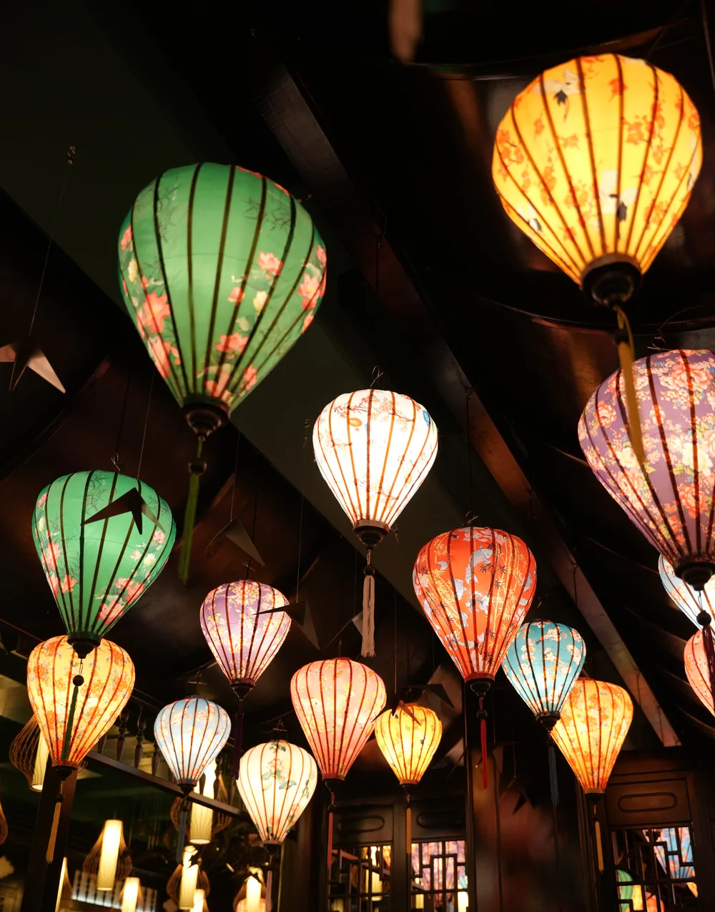

Tết, das Mondneujahr, ist das wichtigste Fest des Jahres in Vietnam. Familien kommen zusammen und feiern gemeinsam den Beginn des neuen Jahres nach dem Mondkalender.
Ein Fest für die Familie
Zu Tết gehört das gemeinsame Essen. In vielen Familien stehen mehrere Gerichte in der Mitte des Tisches, und alle bedienen sich. Dieses Teilen steht auch bei uns im Mittelpunkt: Unsere Platten und Vorspeisen sind zum gemeinsamen Genießen gedacht.

Möchten Sie vietnamesisch essen? Reservieren Sie Ihren Tisch bei Mr. Le in Offenbach, Berliner Straße 50.
Tisch reservieren